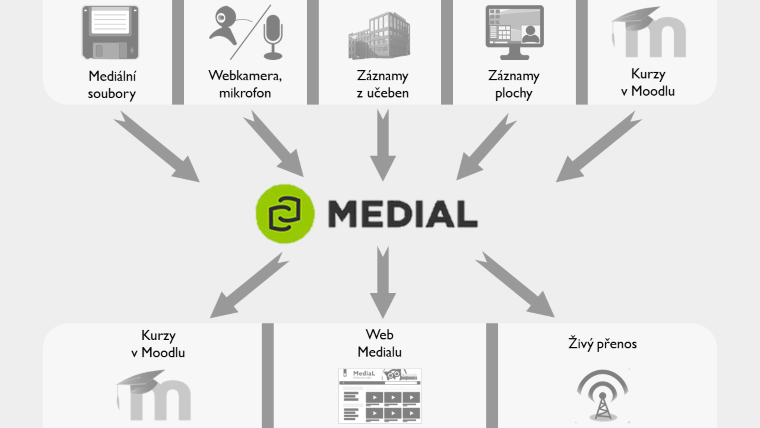

Využití Medialu¶
Stručný přehled¶

Medial lze využívat jednoduše k zálohování a skladování videí a zvukových nahrávek, které souvisí s činností jednotlivých pracovišť FF MU. Nabízí však i jiné možnosti využití, které jsou ještě rozšířeny integrací s dalšími e-learningovými systémy filozofické fakulty. Obr. 1 znázorňuje, jak můžete do Medialu přidávat obsah a jakými cestami můžete tento obsah zprostředkovat ostatním.
- Mediální soubory: do Medialu lze nahrát audio- a videosoubory běžných formátů jako jsou MP4, AVI, MP3, WAV a další. Průvodce přidáváním obsahu spustíte tlačítkem Upload na hlavní stránce. Podrobný návod najdete zde.
- Webkamera, mikrofon: díky Medialu můžete snadno vytvářet vlastní nahrávky pomocí webkamery nebo mikrofonu. Použít můžete třeba i kameru ve svém notebooku nebo – přes mobilní verzi stránek – fotoaparát svého tabletu či telefonu. Podrobný návod najdete zde.
- Záznamy z učeben: záznamy pořízené automatizovaným nahrávacím zařízením ve vybavených učebnách se po ukončení nahrávání a zpracování odešlou přímo do Vaší osobní kategorie v Medialu.
- Výukové tutoriály: pomocí nástroje Techsmith Relay můžete vytvářet pracovní návody a výukové tutoriály nebo třeba komentované výukové prezentace. Hotové nahrávky pak můžete odeslat k uložení přímo do Medialu.
- Kurzy v Moodlu: v neposlední řadě můžete do Medialu přidávat obsah přímo ze svých kurzů v Moodlu. Takto můžete vkládat mediální soubory nebo vytvářet vlastní nahrávky. Popis propojení obou systémů naleznete zde, podrobnější postup pak v tomto návodu.
Jak můžete obsah Medialu zveřejnit?
- Kurzy v Moodlu: obsah z Medialu můžete snadno vkládat do svých kurzů v Moodlu, zároveň můžete studentům zadat, aby odevzdávali vlastní A/V nahrávky z Medialu jako řešení úkolu.
- Web Medialu: své nahrávky můžete zveřejnit přímo na webu Medialu, přičemž můžete ovlivnit, kdo je bude moci zhlédnout. Z webu Medialu můžete svá videa také nasdílet jiným osobám, na jiné weby nebo si je stáhnout k sobě do počítače. Podrobný návod najdete zde.
- Živý přenos: přednášky z učeben v mohou být i živě vysílány, takže je konkrétní uživatelé (případně veřejnost) mohou sledovat přímo na webu Medialu. Pokud chcete této možnosti využít, kontaktujte nás s dostatečným předstihem, vše potřebné pro Vás zařídíme, vysvětlíme vám celý postup a budeme k dispozici při spuštění přenosu přímo v učebně.
Scénáře užití¶
Nenapadá Vás, jak byste mohli Medial (a video nahrávky obecně) využít? Pro inspiraci nabízíme alespoň několik obvyklých scénářů užití. Seznam by samozřejmě mohl pokračovat – nezapomeňte, že díky propojení Medialu s dalšími součástmi e-learningového prostředí FF MU (ELF) se Vám nabízí poměrně pestrá škála možností, jak audiovizuální materiály vytvářet, zveřejňovat a používat ve vlastní výuce nebo třeba k propagačním účelům.
Mám k dispozici několik souborů s videi, které chci zálohovat na jednom místě tak, abych k nim měl kdykoliv přístup.
Toto je nejzákladnější způsob využití Medialu. Jednoduše nahrajte svá videa do Medialu a zařaďte je do kategorie podle toho, kdo by k nim měl mít přístup. Videa pak budete moci zhlédnout přímo v Medialu, dále je sdílet nebo si je z Medialu zase stáhnout.
Mám k dispozici soubor s videem a chci jej umístit do svého kurzu v Moodlu.
Pomocí tlačítka Medial v HTML editoru Moodlu můžete nahrát video do Medialu a zároveň jej vložit do svého kurzu, aniž byste vůbec opustili pracovní prostředí Moodlu.
Chci zaznamenat svou přednášku a zveřejnit ji pro všechny studenty Filozofické fakulty.
Pomocí automatizovaného nahrávacího systému v učebnách fakulty můžete snadno zaznamenat své přednášky. Nahrávání spustíte a ukončíte pouhým stisknutím tlačítka a hotový záznam se poté objeví ve Vaší osobní kategorii v Medialu. Video můžete poté zveřejnit vybraným skupinám uživatelů přímo na webu Medialu.
Chci zaznamenat svou přednášku a zpřístupnit ji v Moodlu pouze svým studentům.
Svá videa nemusíte zveřejňovat. Své osobní a soukromé nahrávky můžete vložit do kurzu v Moodlu, kde je budou moci zhlédnout pouze studenti, kteří jsou v kurzu zapsaní. Na webu Medialu zůstane Vaše video nepřístupné.
Chci nahrát výukový materiál s ukázkou správné výslovnosti a zprostředkovat jej studentům.
Medial nejsou jenom videa – pracovat můžete i se zvukovými nahrávkami, které můžete také pořizovat pomocí vlastního mikrofonu.
Chci nahrát průběh konference a zpřístupnit jej široké veřejnosti.
Umístíte-li záznam do veřejné kategorie, bude přístupný všem návštěvníkům Medialu, včetně neregistrovaných hostů.
Chci zaznamenat průběh kulturní akce a zpřístupnit jej pouze jejím účastníkům.
Video můžete ponechat ve své osobní kategorii a konkrétním lidem na ně poslat odkaz. Pouze lidé s přímým odkazem se k videu dostanou.
Chci vytvořit výukový tutoriál se záznamem plochy a umístit jej do svého kurzu v Moodlu.
Pomocí nástroje Techsmith Relay můžete vytvářet výukové tutoriály se záznamem plochy. Videa z Relaye se uloží do Vaší kategorie v Medialu, odkud je můžete snadno vložit do svého kurzu.
Chci zaznamenat interní poradu na svém pracovišti, zpřístupnit ji pouze svým kolegům a záznam rozdělit do kapitol podle probíraných bodů.
Umístíte-li nahrávku do zaměstnanecké kategorie svého pracoviště, uvidí ji v Medialu pouze zaměstnanci tohoto pracoviště. U svých videí také můžete nastavit kapitoly, které umožní přeskočit rovnou na konkrétní čas nahrávky.
Chci zaznamenat vystoupení hostujícího přednášejícího, streamovat je případným zájemcům živě a poté záznam zveřejnit v kurzu v Moodlu.
Při použití automatizovaného nahrávacího systému v učebnách fakulty můžete povolit, aby nahrávanou přednášku mohli uživatelé Medialu sledovat v přímém přenosu – třeba i ze svého domova. Po ukončení a zpracování záznamu se nahrávka objeví ve Vaší kategorii v Medialu.